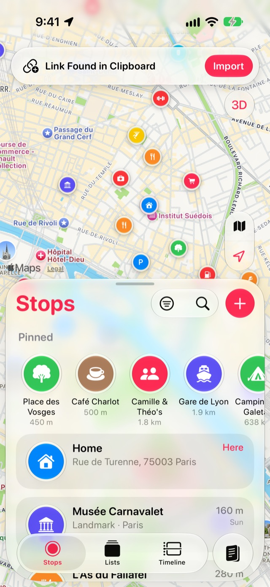

如何从 Safari 浏览器、Google Maps 或任何 App 存储地点
博客里的面包店，朋友发来的酒吧，别人地图上的观景点。无论在哪里发现一个地方，轻点几下就能把它存入 Stops。
- 免费
- 几秒钟
- iPhone 和 iPad
分步说明
-
分享到 Stops
在 Apple 地图、Google Maps、Safari 浏览器或任何 App 中，轻点共享按钮并选择 Stops。你也可以在 App 下方的操作中选择存储到Stops。
-
检查名称并存储
Stops 会根据链接、地址、坐标或给出的名称找到该地点，并填好名称和类别。如有需要，可在你是不是要找下选取其他匹配项，然后轻点存储。
-
或者直接拷贝链接
在任意位置拷贝一个地图链接，然后打开 Stops。地图上方会出现在剪贴板中找到链接横幅：轻点导入。

须知
- 分享一篇提到多个地点的文章，例如“巴黎最好的面包店”，在支持 Apple Intelligence 的设备上，这些地点会一起作为新列表出现。
- 分享 Apple 地图指南会导入其中的每个地点；请参阅导入 Apple 地图指南。
更多指南
Apple 地图指南把你在 Apple 地图中创建的指南变成停靠点列表。Google Maps 已保存地点通过 Google Takeout，把你在 Google Maps 中加星标和保存的地点搬过来。GPX 文件将徒步、骑行和 GPS App 中的航点导入为停靠点。
获取 Stops
想再回去的地方，尽在 iPhone、iPad、Mac 和 Apple Watch。